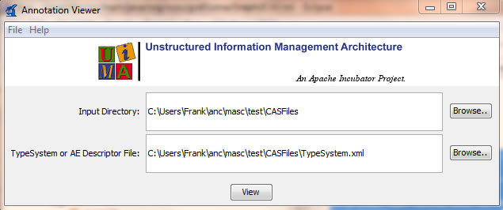
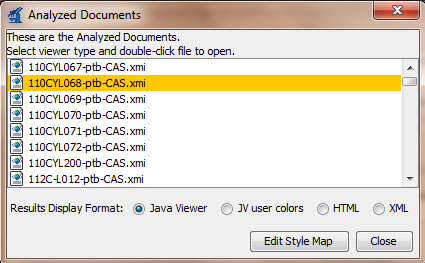
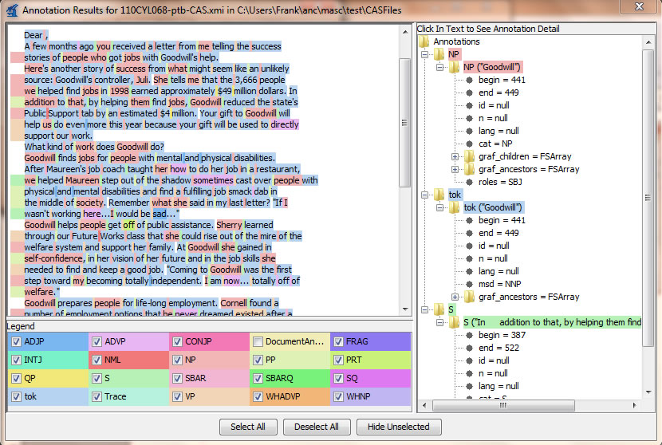

Download
Online Javadocs can be viewed here.
Usage
ANC provides tools to convert ANC standoff annotation files in GrAF to the Common Analysis Structure File (CAS) used by the Unstructured Information Management Architecture (UIMA), and to export annotations in UIMA CAS format to GrAF. The tools can be accessed through the UIMAUtils API or by running an executable jar file. Both methods are described in the following sections. Familiarity with UIMA and Java is assumed.
Using the ANC’s UIMAUtils API
The UIMAUtils package contains classes to convert annoations in GrAF format to a CAS (UIMA Common Analysis System format). The classorg.exces.graf.uima.example.Example shows how this can be done.
The following steps are required to create a CAS from GrAF annotations:
- A UIMA type system must be derived from the graph annotations from which a type system description can be extracted.
- A description of the indices to be used in the CAS must be created.
- Type priorities must be created.
- The createCas() method in the CASFactory class must be called with the objects obtained above as arguments.
The following classes in the UimaUtils package perform the conversion:
TypeSystemFactory
This class performs steps 1 and 2 of the conversion described above. A type system is converted to a type system description using the UimaUtils.getTypeSystemDescription() method which wraps around the UIMA method org.apache.uima.util.TypeSystemUtil.typeSystem2TypeSystemDescription().
Three base types are created:
- grafAnnotationType is derived from the UIMA Annotation type (uima.tcas.Annotation). Features “id”, “n” and “lang” are added to this type.
- grafListType is an array type with component type as grafAnnotationType
- uimaStringType is derived from the UIMA String type (uima.cas.String). It is used as the type for every feature that is added to a type.
The nodes of the graph passed to the createTypeSystem() method are iterated over and a type is created for each annotation encountered. Every new type is derived from the grafAnnotationType. The name of a type is controlled by an ILabelMaker object (using the DefaultAnnotationLabelMaker implementation). The label maker makes sure that type names conform to UIMA specifications (type and feature names cannot contain special characters other than underscore). It records changed names within an altered-type-name-map (an org.xces.graf.util.NameMap object). This map can be written to disk in XML format.
Next, the features encountered in an annotation are added to the corresponding new type. Feature names are derived from the annotation and feature structure names within which they are nested. Feature names are post-processed to conform to UIMA specifications. A feature whose name is changed is recorded within an altered-feature-name-map (an org.xces.graf.util.NameMap object). This map can be written to disk in XML format.
A feature called “children” of type grafListType is added to a type corresponding to an annotation that annotates a node with children in the graph. The type system factory also creates the FsIndexDescription array as it generates the type system. Every feature (including those inherited) within a type is added as a key to its index. After a type system has been generated, the index array can be retrieved with a call to getIndices().
TypePrioritiesFactory
Types corresponding to annotations are assigned priority in one of two ways:
- From the order in which they are encountered when a DFS is performed over the graph. Nodes that appear earlier are assigned higher priority. For each annotation “A” the relation comes_before(P, A) is recorded for each ancestor P of A.
- From an exhaustive ordering defined on the annotations (IAnnotationOrder object). The user should derive type priorities this way when the graph contains multiple annotations per node or when many nodes point to the same region.
CASFactory
This class performs step 4 of the conversion, by creating a CAS given a graph, a UIMA type system, and an index description. Once the type system has been created for a graph, the actual annotations within it must be instantiated as UIMA feature structures (for the CAS). The feature values must also be set.
The org.xces.graf.util.Flattener is used to set the “user object” of every node in the graph as a region. This region is used to store the ‘begin’ and ‘end’ anchors (offsets in the case of text) that the node spans. In the case of text, these are calculated from the offsets of the regions that the children of the node annotate. The ‘begin’ offset is the minimum of the ‘begin’ offsets among all children, and the ‘end’ offset is the maximum of the ‘end’ offsets among all children. For instance, if a graph consists of 3 nodes (annotations) — a node “sentence” with children “noun” and “verb” — with the children annotating regions 0 to 10 and 11 to 20 respectively, the ‘begin’ and ‘end’ for “sentence” will be calculated as 0 and 20 respectively. These values are then be used to set the values of the corresponding features for each annotation.
The nodes of the graph are iterated over and each annotation encountered is instantiated as a feature structure in the CAS. Feature values are also set. Further, the children, if any, of a node (annotation) are added as components in the “children” feature array.
Using UIMAUtils.jar
The UIMAUtils package provides a command line executable jar file that performs the steps listed above to convert ANC GrAF Stand off files to UIMA CAS Files.
The jar file can be run with the command:
java -jar UimaUtils.jar -in=<path> -out=<path> [-help] -type=<string>
The command line parameters are :
- -in : specifies the input directory or file.
- -out : specifies the output directory.
- -help : prints this usage message.
- -type : specifies the input Stand-Off Types: ptb|fn|logical|s|nc|vc|ne|fntok|ptbtok
The standoff File types (all in GrAF) supported are :
- ptb : Penn Tree Bank
- fn : Frame Net
- logical : The logical structure of the document (down to the paragraph level)
- s : Sentence boundary annotations
- nc : Noun chunks
- vc : Verb chunks
- ne : Named entities
- ptbtok : Penn Tree Bank token annotations
- fntok : Frame Net token annotations
Once completed, UIMAUtils.jar will produce two file types, a UIMA Type System descriptor file and the CAS File. If run over a directory of GrAF files, it will produce one CAS file for each input file and one comprehensive Type System Descriptor file compiled from all the input files. Note: Large files may require an increase of java heap space (option -Xmx1000m ).
Running the UIMA Annotation Viewer
To verify the conversion, use the UIMA Annotation Viewer (annotationviewer.bat) located in the UIMA distribution directory uimaj-distr\src\main\scripts. For complete documentation on the use of the tools and examples provided by UIMA please review UIMA documentation.
The annotation viewer will pop up the following window. Type in the input directory where the CAS files are located and the type system descriptor file, then click view:

In the next window double click a CAS file:

View the annotations:
